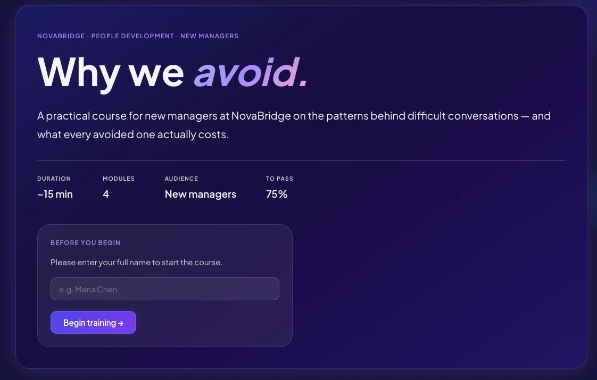

Why We Avoid: The Hidden Cost of Difficult Conversations
For new managers. 15 minutes, four modules. Built in HTML, CSS and JavaScript with Claude Code.
NovaBridge promoted 14 people into management with no training, and turnover on their teams hit 34%. This course doesn't hand managers a script. It works on why they put hard conversations off: learners meet three managers with three different avoidance patterns, rate themselves to find their own, and weigh what one avoided conversation costs.
Key decision: treat it as a behavioral gap, not a knowledge gap. The knowledge check uses new characters, so it tests the pattern, not memory of the stories.
Open the course